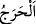
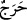

korumak için nikâhda şâhidlerin olmasını şart koşmuştur.
Rivâyete göre Hz. Zeyneb’in iddeti dolunca Rasûlullah (s.a.) Zeyd (r.a.)’a:
“Gönlümde senden daha güvenilir birini bulamıyorum. Zeyneb’e benim için dünürcü
ol.”[219] buyurdu. Hz. Zeyd der ki: “Zeyneb’e gittim, baktım ki hamur yoğuruyor. Ona:
“Ey Zeyneb, müjde olsun sana! Rasûlullah (s.a.) seninle evlenmek istiyor.” dedim.
Zeyneb (r.a.) sevindi ve: “Rabbimin emri gelinceye kadar bir şey yapacak değilim.”
dedi. Kalkıp (evinin) mescidine çekildi. Bu arada “onu sana nikâhladık” âyeti nâzil
oldu. Rasûlullah (s.a.) Zeyneb (r.a.) ile evlendi ve gerdeğe girdi. Onun için verdiği
velimeyi/düğün yemeğini hanımlarından hiç birinin evliliğinde vermemiştir. Rasûlullah
(s.a.) bir koyun kesti, gündüzün geç saatlerine kadar insanlara et ve ekmek ikrâm etti.
Zeyd (r.a.)’ın Hz. Zeyneb’e dünür olarak görevlendirmesi de Zeyd için büyük bir
imtihan, îmânının kuvvet ve köklülüğüne şâhiddir.
İtikâdım, ağaç kökü gibi sağlamdır,
Aşk ve sevdâ hevesiyle biraz bile artmaz.
el-Müfredât’ta der ki: “
” iki şeyin birleşme yeridir. Bundan o iki şey arasında bir
darlık olduğu tasavvur edilmiştir. Onun için darlığa “
” denilmiştir. Günaha da “
”
denir.
Bu âyette, -bir delilin tahsis ettiği dışında- Hz. Peygamber (s.a.) hakkındaki hüküm ile
ümmet hakkındaki hükmün eşit olduğuna delil vardır.
Hasan Basrî şöyle demiştir: “Araplar oğlun hanımının haram olması gibi oğulluğun
hanımının da haram olduğunu zannederlerdi. Allah Teâlâ, sulbden gelen oğlun aksine
evlâdlıklar hanımlarıyla gerdeğe bile girseler evlatlıkların hanımlarının babalıklarına
haram olmadığını açıklamıştır. Halbuki öz oğlun hanımı, yalnız nikah akdi ile babaya
haram olur.
“Allâh’ın” meydana getirmek istediği “emri yerine getirilmiştir.” Mutlaka meydana
gelecektir. Peygamber bile olsa Allâh’ın emrini geri çevirmek mümkün değildir. Tıpkı
Zeyneb (r.anhâ)’nın evlendirilmesi gibi ki Hz. Zeyneb Hz. Zeyd’in yanında emânet
gibiydi. Bunun için Hz. Üftâde (k.s.) şöyle demiştir: Bizim inancımıza göre Hz. Zeyneb
(r.anhâ) Hz. Âişe (r.anhâ) gibi bâkireydi. Çünkü Hz. Zeyd Hz. Zeyneb’in Hz. Peygamber
(s.a.)’in hakkı olduğunu biliyordu. Onun için ona dokunmadı. O da Âsiye ve Züleyha
gibi (bâkireydi). Fakat Âişe (r.anhâ)’nın irfânı anlatılamaz. Bu konuda Hz. Peygamber
(s.a.)’in meylinin hanımları arasında en çok ona olması bizim için yeterlidir. Hem de
Hz. Âişe’nin çocuğu olmamış/doğurmamıştır. Çünkü doğurmamak (zât mertebesi) bütün
taayyünâtın üstündedir.
Âişe (r.anhâ) Zeyneb (r.anhâ) hakkında “O Rasûlullah nezdindeki mevkiinde benimle
eşitti. Ben dinde Zeyneb’den daha hayırlı, Allah’tan daha çok korkan/müttakî, daha
doğru sözlü, akrabalık bağını daha çok koruyan ve daha çok sadaka veren birini